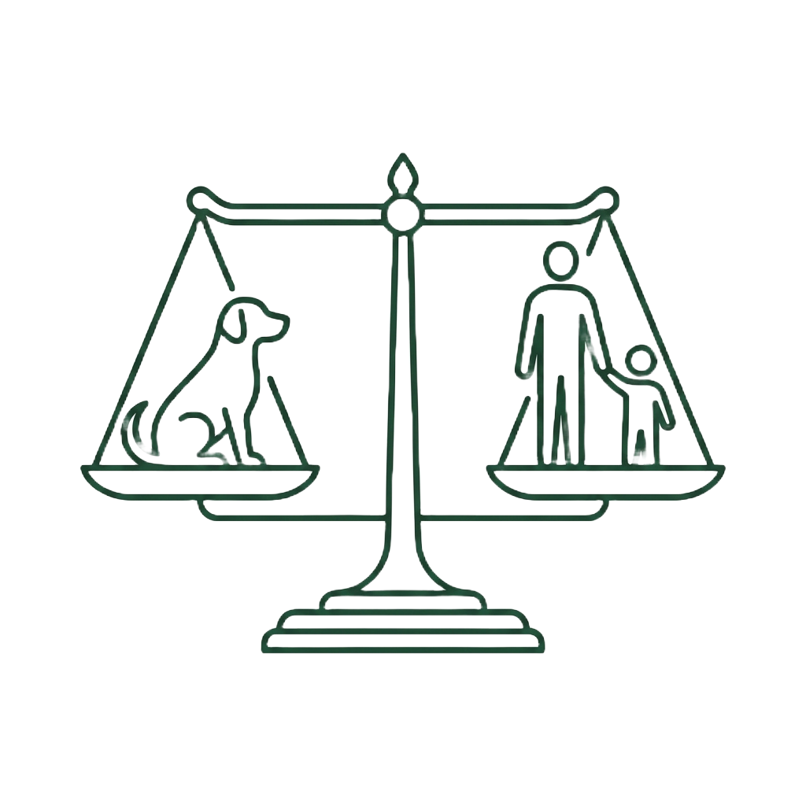

Le chien ne s'éduque pas, il se construit avec vous. Ma mission : vous accompagner sereinement, dès les premières questions.
Coaching personnalisé avant l'adoption, et soutien aux familles.
En savoir plus →Diagnostic honnête, relais vers les bons spécialistes.
En savoir plus →FreePaws Park : un espace sécurisé, en préparation.
Découvrir FreePaws Park →Un lieu pensé pour que votre chien puisse enfin courir, jouer et se dépenser librement et en sécurité, entre Liège, Huy et Waremme.
Je ne me substitue pas à votre travail, je le prolonge. J'apporte le cadre éducatif et environnemental qui aide vos bénéficiaires — et leurs familles — à trouver leur équilibre, au quotidien.
« Je sélectionne avec soin les structures et personnes vers lesquelles j'oriente, pour garantir la cohérence de la prise en charge. »